USMAN SHIDDIQ
GRAPHIC DESIGNER, TECH ENTHUSIAST & TI STUDENT
A LITTLE STORY ABOUT ME
Halo! Perkenalkan, namaku Usman Shiddiq, biasa dipanggil "MAN", seorang mahasiswa Program Studi Teknologi Informasi di UIN Ar-Raniry Banda Aceh yang saat ini sedang menempuh semester lima. Aku memiliki ketertarikan besar terhadap dunia teknologi, khususnya dalam bidang pengembangan perangkat lunak, desain digital, serta pengembangan website dan aplikasi. Selama menjalani perkuliahan, Aku terus berusaha memperluas pengetahuan dan meningkatkan keterampilan melalui berbagai tugas, proyek, dan eksplorasi teknologi baru. Bagiku, teknologi bukan hanya tentang memahami cara kerja sebuah sistem, tetapi juga tentang bagaimana menciptakan solusi yang bermanfaat dan mampu menjawab kebutuhan masyarakat.
Selain berfokus pada bidang akademik, Aku juga memiliki minat dalam dunia desain kreatif, seperti pembuatan poster, identitas visual, logo designer, serta desain antarmuka pengguna (UI/UX). Aku senang mempelajari hal-hal baru, mencoba berbagai ide, dan mengembangkan kemampuan yang dapat mendukung potensi diri, baik di bidang teknologi maupun kreativitas. Aku percaya bahwa proses belajar tidak berhenti di ruang kelas, sehingga Aku berusaha memanfaatkan berbagai kesempatan untuk menambah pengalaman, membangun portofolio, dan mempersiapkan diri menghadapi dunia profesional. Ke depannya, Aku berharap dapat menjadi individu yang kompeten, kreatif, dan mampu menghasilkan karya yang tidak hanya menarik secara visual, tetapi juga memiliki nilai guna dan memberikan dampak positif bagi orang lain.
FIND ME ONLINE

ROBLOX ➜